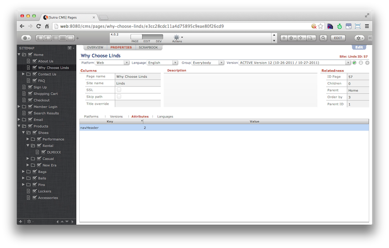

Pages
A website is a collection of pages. Organizing pages can be done a number of ways.
Site Map
Pages can be organized into groups of pages by moving pages under other pages in the site map view pane.
To help facilitate page organization you can create “folder” pages. These pages have no markup and will redirect incoming requests to the first child page.
Page hierarchy is a fundamental driver for navigation and page listing blocks. You can target all top level pages or a particular group of pages—and include various levels of pages.
While you can create unlimited levels of page groups, after a certain point managing the page levels may become more effort than the value created by your organization structure.
Pages can have multiple children pages but only one parent page.
Key API methods:
globals.CMS.markup.getHomePage(siteRec)
globals.CMS.markup.getErrorPage(siteRec)
globals.CMS.markup.getPagesDown(pageRec)
globals.CMS.markup.getPagesUp(pageRec)
Attributes
Pages can be explicitly “tagged” with attributes. Attributes come in the
form of key/value pairs. Attributes need to be set up for a site in the
Site record before they can be applied to pages.
Pages with common attribute keys allow you to group pages that are located in disparate places in the site map. The attribute value can be either left blank, used to order pages, or used to apply additional structure.
Attributes allow you to code logic based on attribute key and value present on a page. Use cases include navigation blocks, applying specific markup, avoiding a page with a certain attribute, etc.
Pages can be tagged with multiple attributes.
Key API method:
globals.CMS.markup.getPagesAttribute(data, att)

Meta data
Pages have a LOT of additional meta data beyond their location in the site map and the attributes applied to them which can be coded against. Published status; active version; platform, language and group they belong to; SEO headers; last updated; etc.
Sutra CMS collects all of this information for the current page request and puts it in:
globals.CMS.data
If you are iterating over a page collection we currently do not have a method to return all page meta data in one shot. Instead, you need to use Servoy’s relation objects to retrieve specific meta data for a page. This requires a good understanding of Servoy’s foundset and relation objects and how the Sutra CMS data structures are organized.
Sample code
Bootstrap3 navigation block. Finds all pages with attribute “nav-main”, sorts in site map order, and returns navigation markup:
/**
* @returns {String} markup for this block
*/
function VIEW_main () {
var markup = ''
// get top pages
/** @type {JSFoundset<db:/sutra_cms/web_page>}*/
var pages = globals.CMS.markup.getPagesAttribute("nav-main")
// open markup
markup += '<div class="collapse navbar-collapse navbar-ex1-collapse" role="navigation">\n\
<ul class="nav navbar-nav navbar-right">\n'
if (typeof pages != 'number' && utils.hasRecords(pages)) {
pages.sort("order_by asc")
// level 1
for (var i = 1; i <= pages.getSize(); i++) {
var currentRec = pages.getRecord(i)
var page = globals.CMS.token.getPage(currentRec)
var templateLvlOne = '<li><a href="{{link}}" {{class}}>{{name}}</a></li>\n'
var dataLvlOne = { link : page.link, name : page.name, "class" : (currentRec.id_page == globals.CMS.data.page.id ? 'class="active"' : '' ) }
markup += globals.CMS.markup.merge(templateLvlOne,dataLvlOne)
}
}
// close markup
markup += '</ul>\n\
</div>\n'
return markup
}